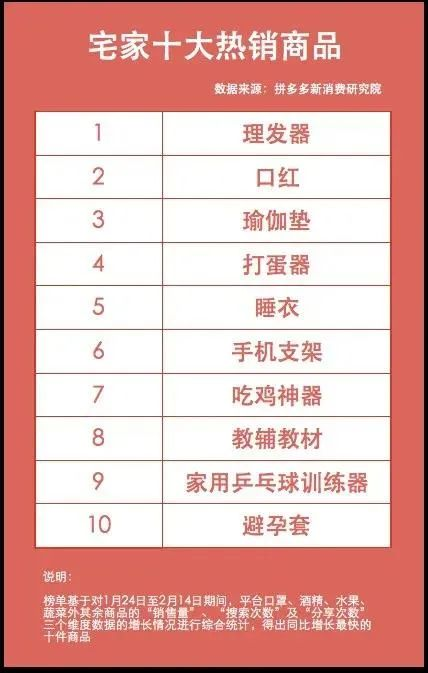
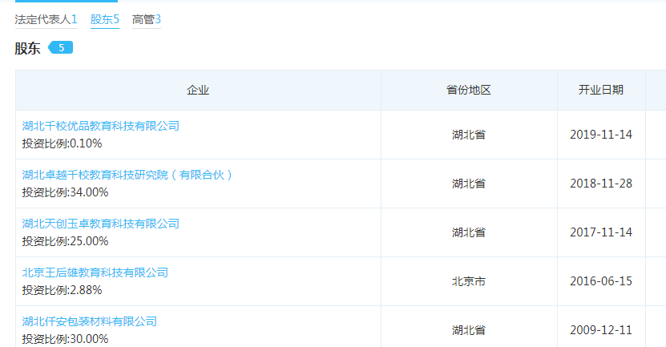
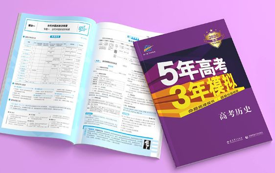
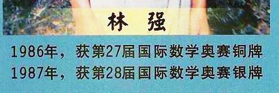

疫情这57天里，中国发生了哪些不易察觉的变化？
原文链接 备份链接 每一颗齿轮，仍在转动。 今天是武汉封城的第57天。 不止武汉，在这57天里，整个中国都因这场突然而至的疫情陷入隔离，城市被分割成孤岛，小区封闭，楼栋禁止出入，14亿人被丢进了一场大型社会实验中。 根据行为心理学，人类只 …

点击上方物质生活参考加星标！
物质生活参考

作者：彭梁洁
来源：物质生活参考（ID：wzshck）
01.
疫情期间，网上流传着一则关于黄冈的新闻：
湖北武穴（黄冈下辖代管的一个县级市）最严管控：非疫情防控人员上街被抓的，一律送到市体育馆学习，然后完成初中三年级的《黄冈密卷》一张，成绩及格者可以放回家。
这则假新闻流传甚广，太多人信以为真，绝对是深谙互联网传播之道的一次成功的假新闻操作。
因为它描述的事件完全符合外界对这座城市的了解——《黄冈密卷》早已冲出圈层，成为黄冈这座大别山南麓鄂东城市的地标；同时基于很多人学生时代都经历过的被《黄冈密卷》支配的恐惧心理，在疫情期间化身为防止人们出门的“威慑武器”，合情合理。
在这次疫情中，《黄冈密卷》还因其“礼轻情意重”，完全具备了“礼品属性”，在网友眼中成为黄冈答谢外界帮助的桥梁：
郑爽团队向黄冈定点捐款捐物，网友呼呼黄冈市向其粉丝赠送《黄冈密卷》作为感谢；山东在“一省包一市”对口支援黄冈，网友又给出建议，等疫情结束，黄冈再送山东几车试卷，不知山东的学生们是该哭还是该笑；黄冈景区宣布为山东湖南医务人员终身免票的微博下，不少网友又提议，《黄冈密卷》也终身免费赠送吧。
其实山东是不必送的。要知道，山东也是教育大省，有“教辅界三巨头”之称的，除了《黄冈密卷》的主编王后雄，另外两个让我们同样“闻之色变”的名字——《志鸿优化》的任志鸿、《教材全解》的薛金星——都来自山东，两地实力可谓不相上下。
多年以后，当人们追忆最美好的学生时代，跃入脑海的画面除了隔壁班的女孩和窗外的蝉鸣，一定还有自己对着“三巨头”抓耳挠腮的窘态。

可别小瞧了这些薄薄的书本和淡如水的“教辅之交”。
日前拼多多新消费研究院统计的“宅家十大热销商品”，教辅教材榜上有名；京东图书和当当网销量最高图书前十位里，教辅教材占据了大半壁江山。

从最近的两则相关新闻可以看出教辅在人民生活中的地位。
第一则，《新华书店恢复开店，迎来首批读者，教辅材料受热捧》报道中描述：
很多读者进店后都选择直奔设在负一楼的教辅材料区。70多岁的赵大妈是首位结账出店的读者，她挑选了厚厚一摞教辅材料“。这些都是孩子需要的。”她说“，本来过完年后，孩子应该上三年级下学期了。可因为疫情影响，迟迟没有开学，所以孩子的父母就让我到书店买点参考书。”
第二则，近日，山东某地就教材配送业务面向社会公开招标，各大快递公司纷纷参与竞标。报道称：
中标的邮政快递事业部全体人员参与到这场紧急战斗中，从晚上18点一直到次日凌晨2点，经连续8个多小时的紧张奋战，针对不同类型学生的课程组合，终于完成2000多件不同组合包裹的分拣、封装工作，早上7点将邮件全部发出，早上8点开始配送。
中高考临近，这些教材在某种程度上撑起了一个孩子乃至一个家庭的希望。
知名电竞主播PDD在一次直播中提到往事：粉丝上课看我直播，手机被收了找我赔，我反手给他买了三套《黄冈密卷》，“一套不够，两套巩固”。PDD去年上《吐槽大会》时曾告诫年轻人，专职电竞是一条非常难走的路，除非确认自己是“百万分之一”的天才，否则还是回去刷教辅吧。算得上三观端正的电子竞技玩家了。
在这次疫情中，被教辅拯救的不仅是众多宅家深受熊孩子“折磨”的父母们，还有线下实体书店。已持续多年的实体书店倒闭潮之下，一些书店依靠出售教辅勉力维持，在这场疫情中，教辅教材更是成为雪上加霜中小书店珍贵的现金流来源。例如《第一财经》的一篇报道称，“营业额仅为以往一成，实体书店靠众筹、教辅、直播支撑”。
02.
被冠以“黄冈”之名的教辅，除了《黄冈密卷》，还有我们非常熟悉的《黄冈小状元》。但奇特的是，二者都与曾经被称为“黄冈神话”的黄冈中学无关，只是召集了一群来自黄冈地区的一线教师和教育专家编写。
《黄冈小状元》由龙门书局出版，“小状元”系列是其“镇社之宝”之一，另一“宝”是同样能触发我们回忆开关的《三点一测》。成立于上世纪30年代的龙门书局被誉为教辅出版界“三架马车”之一，20世纪初又被评为“文教新六家”——除了龙门书局，还有陕西师大、广西师大、山西教育、中国少年儿童出版社、东北师大。
至于由新疆青少年出版社所出《黄冈密卷》的“真假”，黄冈中学早在十几年前就做出澄清：
《黄冈密卷》和学校没有任何关系，试题也并非来自黄冈中学，学校现在在职的老师没有参与编写，学校的学生也不会去做《黄冈密卷》。
声明一出，许多人大呼上当，但此噱头经久不衰，或许可以印证黄冈曾经在教育界的声望和影响力。
黄冈中学有自己的教辅，但并不对外公开出版，只供内部使用。而《黄冈密卷》“背后的男人”王后雄，也是一位土生土长的黄冈人，也曾在黄冈本地中学任教，他对此回应称：“我所主编的黄冈系列教辅完全是黄冈教育方法、经验、理念的提炼和体现，并不是借用或滥用了“黄冈”这个品牌。”
王后雄堪称湖北教育界的传奇人物。上世纪80年代，化学专业的王后雄在黄冈下辖某县中学任教，以别具一格的教学方式带着班级在全县化学统考中名列第一，接着调入黄冈一中，因90年代出版的奥数教辅《高中化学竞赛基础教程》，以及21世纪初出版的《化学重难点手册》扬名全国。他曾被评为湖北省特级教师，当选湖北省第九届人大代表，享受国务院政府特殊津贴。
2001年以来，王后雄一直在华中师范大学任教。在学校化学院官网上可以查到：王后雄目前身兼数职——华中师范大学教授、博士生导师、教师教育学院副院长、化学教育研究所所长、校考试科学研究中心主任。
值得一提的是，王后雄的商业头脑与其教研水平同样难得。据天眼查数据显示，目前他担任1家公司的法定代表人和5家公司的股东。

当然，与王后雄同在“三巨头”之列的其他两位，生意都做得不错。
任志鸿担任董事长和总经理的世纪天鸿于2017年登陆创业板；薛金星也成立了金星国际教育集团，共持股15家公司。
实际上，教辅不仅是书店的救星，也是出版界的香饽饽——纯文学、小众作品不好买，畅销书要“碰运气”，只有教辅是“刚需”。从历史中走来的新华书店，营收主要来源即为教辅。
国家新闻出版署公布的数据显示，2017年我国图书市场整体规模约为1800亿码洋，其中教育出版市场规模约为1100亿码洋，是图书出版市场中最大的门类。“全国近600家出版社中，90%的出版社出版教辅。在全国3万多个书店中，有近80%的书店经营教辅图书。”一位业内人士说。[1]
03.
称霸90年代的“教辅三巨头”在新世纪迎来一个强大的竞争对手，将“三巨头”格局扭转为“四大天王”，这个新入局者就是让高考生们闻风丧胆的——曲一线公司出品的《5年高考3年模拟》，圈内简称《五三》。

“当你的生命还剩下八年，你会做什么？”
“《五年高考三年模拟》。”
这句调侃在高三学生之间流传。2017年王俊凯在备战高考期间，就收到好友刘昊然精心准备的生日礼物——一套《五三》。
曲一线团队登上撒贝宁的节目《放学别走》
2003非典那年，曲一线公司带着《五三》强势出道，以“将历年高考真题与日常教学知识点相结合”的思路，在位于北京亦庄的办公室里闯出新天地。
据曲一线公司官网显示，《五三》入选了“央视微博评选影响最深的九本书”——因为2014年“央视新闻”官微发起的“对你影响最大的一本书”的微调查中，《五年高考三年模拟》位列第七名，排在《红楼梦》和《围城》之前。
官网还显示，曲一线公司在此次驰援湖北行动中共捐款170多万，也算是“《五三》给《黄冈密卷》加油”了。
在某种程度上，20世纪《五三》的崛起刚好踩在了“黄冈神话”没落的时间点上，这也是教育中心城市向东部沿海地区转移之时。
“2019中国百强中学排行”上，高居榜首的是位于武汉的华师一附中，湖北一共有4所学校上榜，黄冈中学不在其列。
黄冈中学从2015年起跌出100名之外，当年的“北四中(北京四中)，南黄冈(黄冈中学)”传说不复存在，这所百年老校默默承受着媒体报道中“跌下神坛”的形容，很少对外发声。

电影《全城高考》即以黄冈中学为背景
当年，“黄冈神话”有三大法宝：奥赛、高考和教辅。80年代的黄冈中学走出了国内第一位国际奥赛奖牌获得者；1990年国际奥赛首次在中国举办，黄冈中学的王崧获得金牌，次年又摘一金。黄冈中学逐渐摸索出一条依靠奥赛成绩保送清华北大的的独特道路，“黄高9班”即这段历史的产物。这些获奖者的照片至今留在黄冈中学官网首页。


如果感兴趣的话，可以从2008年出版的《黄冈中学教育神话解读》一书中了解这段历史。
至于20世纪以来，种种因素交织，共同将黄冈中学“推下神坛”：新课改；因建新校区而高额举债，扩招导致非优质生源注入，从过去的“精英教育转向大众教育”；竞争激烈，本地顶尖生源被武汉的学校以优越条件挖走，黄冈的经济实力无法相抗衡，优质师资力量也因此流失；等等。前几年媒体做过大量报道。
面对质疑，黄冈中学前任校长刘祥曾留下一句话：
“黄冈中学正处在一个休养生息的阶段。黄冈中学现在位置尴尬：名气很大，但总是遭遇到各种非议。我们好不容易这几年淡出了人们的视线，只想喘口气，静下心来，做自己该做的事情。”
直到2015年的黄冈教育工作会议，新上任的教育局长闻武斌在讲话中称“要重振黄冈教育雄风”，被媒体解读为“黄冈首提重振教育雄风”。
实际上，即便多年再没有出过状元，黄冈中学的高考成绩依然可圈可点。黄冈中学官网显示：2019年高考，一本率96.6%，985高校录取率38%，211高校录取率70%。对于一所位于经济欠发达地区、农村学生占比60%的中学来说，取得这样的成绩并不容易——2018年湖北省各市GDP排名，黄冈市总值第五，人均则排在16位，倒数第二。
3月18日，黄冈正式宣布疫情中“四类人员”清零。相信不久，坐落在黄州大道的黄梅戏大剧院内将再次奏响乐章，遗爱湖湿地公园会重新迎来携手的伴侣。
也希望黄冈考生们在今年高考中取得好成绩。
参考资料：
[1].《教辅图书市场竞争激烈 山东出版企业如何“突围”》来源：大众网
[2].《湖北黄冈中学跌下神坛 14年来仅出了1名省状元》来源：长江商报
[3].《舆论旋涡中的黄冈中学》来源：中国教育报
[4].《教辅巨头沉浮录：中国的教辅行业到底为什么这么乱？》 来源：博雅浮生绘
*图片来自视频、网站截图

△长按二维码，添加物质生活君微信，
回复“粉丝”，进入物质生活粉丝群，
获取独家优质生活参考。

\= 推荐阅读=
被疫情耽误的龙虾，我想拯救它

听我的，别学王思聪养柯尔鹅

“万箭穿心”之后，武汉需要什么样的“抗疫剧”
- END-

原文链接 备份链接 每一颗齿轮，仍在转动。 今天是武汉封城的第57天。 不止武汉，在这57天里，整个中国都因这场突然而至的疫情陷入隔离，城市被分割成孤岛，小区封闭，楼栋禁止出入，14亿人被丢进了一场大型社会实验中。 根据行为心理学，人类只 …
原文链接 备份链接 在线教育行业突然涌入海量的师生 将深刻影响中国教育未来 2月11日，山东省滨州市博兴县第三中学的工作人员利用电脑端实时监控“网络直播教学”进程，随时提供直播技术支持。2020年春季学期开学延期，博兴县第三中学利用网络直 …
原文链接 备份链接 2月16日，百弗英语向学生们发出了教师团队解散的消息。“由于一、二月份疫情对公司的打击非常大，我们资金链出了问题，无法再上课了。” 文 | 敖瑾 实习生 丁宁 编辑 | 盛倩玉 新冠肺炎疫情影响下的教培机构，“线 …
原文链接 备份链接 “疫情迟迟没有尽头，书店撑不住了。”2月24日，单向空间发布了一封续命救助信，称受新冠疫情影响，书店2月份收入较往年下滑80%，希望发起50元至8000元不等的众筹助力计划。这一举措引发了“做书”公号的批评，一篇题为《 …
原文链接 备份链接 我是一个江苏人，在北京上班，在武汉买个房子，娶了个湖北媳妇。我和媳妇很早前就商量好春节在两家轮流过，今年，刚好轮到去黄冈的丈母娘家。 我们从北京坐Z53到武汉，再从宏碁汽车客运站转大巴到黄冈浠水县媳妇家里，已经是1 …